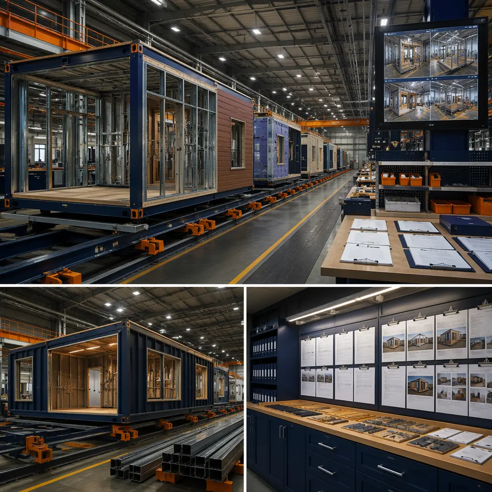
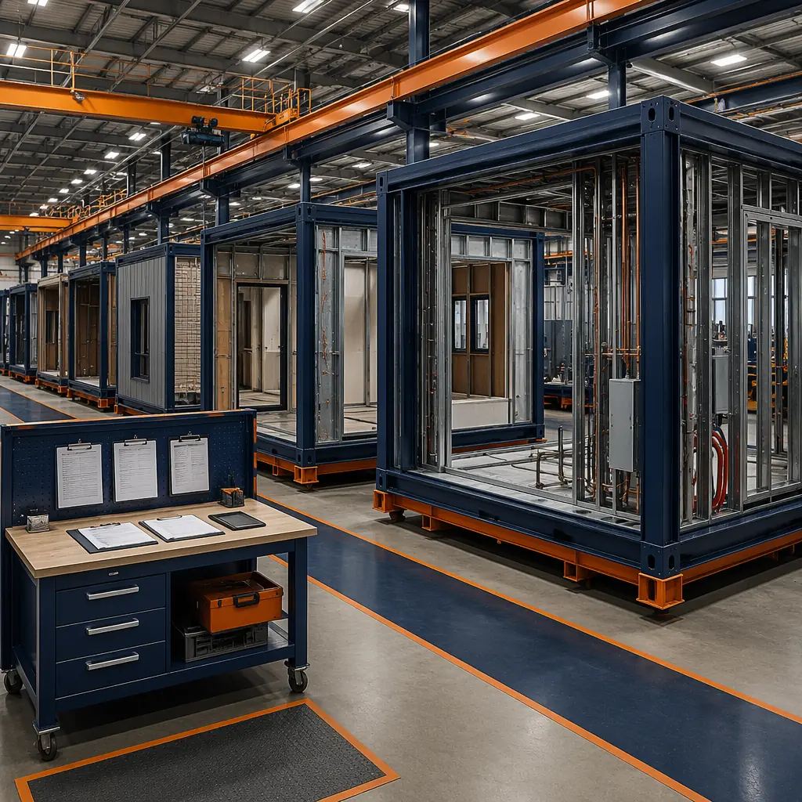
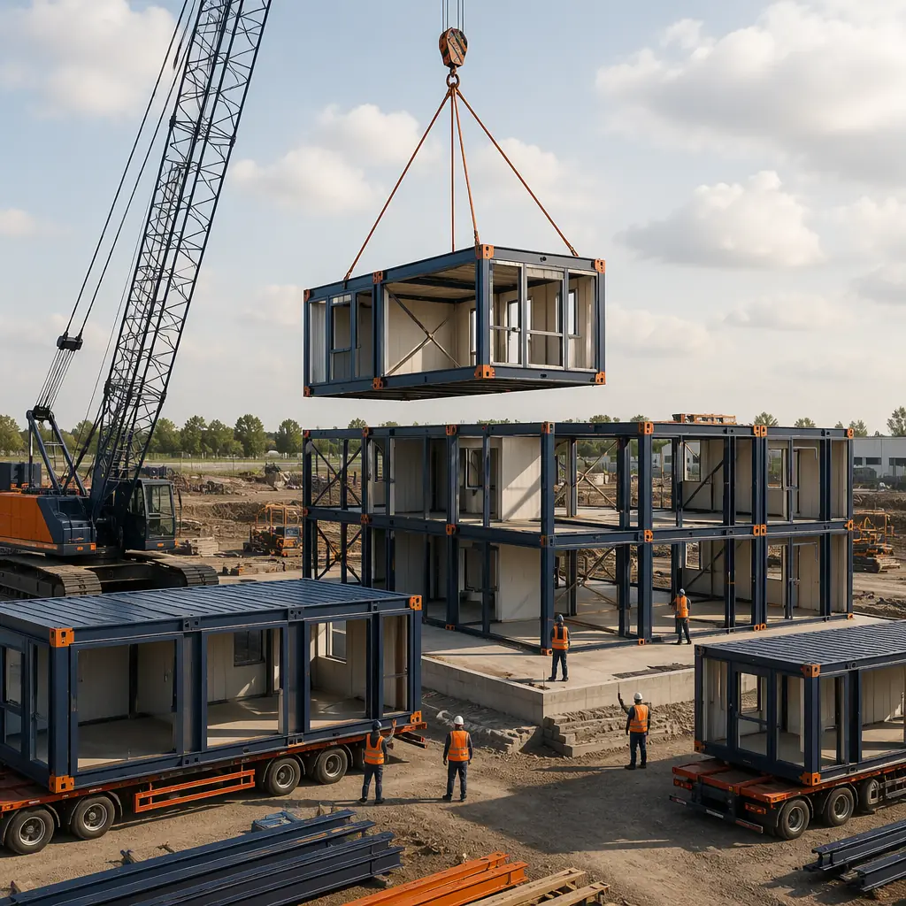

Change orders are the single largest source of budget overrun in commercial construction. Dodge Data & Analytics' 2025 construction industry survey found that change orders average 8.4% of original contract value across all project types, with multi-family and hospitality projects running higher at 10-14%. On a $25 million apartment building, that's $2.1-3.5 million in unplanned costs — money that comes directly out of developer returns and investor distributions. Traditional site-built construction is structurally vulnerable to change orders because scope decisions are made incrementally across months of on-site work, often in response to conditions discovered during construction. Modular prefabricated construction fundamentally changes this dynamic: by shifting 70-80% of construction activity into a factory environment, modular production imposes a disciplined design freeze that eliminates the most common sources of mid-construction scope changes.

Why Traditional Construction Generates So Many Change Orders
Change orders in site-built construction fall into three categories, each driven by fundamentally different mechanisms:
Owner-Directed Changes (40-50% of change order value)
These are the most insidious because they feel controllable at the time but cascade through the project. An owner decides during week 8 of construction to upgrade kitchen countertops from laminate to quartz. The change itself costs $42,000 in materials. But the GC has already roughed-in electrical outlets at laminate countertop height (34 inches). Quartz countertops with a 4-inch backsplash require outlets at 38 inches. Moving 240 outlets across 120 units at week 12 — after drywall is hung — costs $86,000 in electrical rework, $18,000 in drywall patch and paint, and adds 3 weeks to the schedule. The $42,000 countertop upgrade becomes a $146,000 change order with a 3-week delay. In modular construction, the design freeze occurs before factory production begins — typically 8-12 weeks before modules ship — creating a hard gate that prevents late-stage owner changes from entering the fabrication workflow. Our payment draw schedule guide explains how modular's milestone-based payment structure aligns financial draws with the design freeze gate.
Design Coordination Errors (25-35% of change order value)
When the structural engineer's column locations conflict with the mechanical engineer's duct risers — a clash discovered during week 14 of construction when the HVAC subcontractor tries to install a 24-inch rectangular duct through a space occupied by a W12×40 beam — the fix costs $28,000 in steel reinforcement and 2 weeks of schedule delay. These coordination errors are endemic in traditional construction because each discipline produces drawings independently, and clash detection happens reactively during construction. A 2024 study by the Construction Industry Institute found that the average $50 million commercial project has 1,200-1,800 design coordination clashes, of which 40-50% are discovered during construction rather than during design review.
Modular construction's BIM-to-factory workflow eliminates this category of change order entirely. Every module is modeled in a federated BIM environment where structural, mechanical, electrical, plumbing, and fire protection systems are clash-detected and resolved before a single piece of steel is cut. MODURA's BIM-to-factory digital workflow achieves ±2mm precision — the tolerance required for module-to-module MEP connections to align perfectly on site — because the digital model drives CNC fabrication equipment directly. There are no field discoveries of coordination clashes in modular construction because the discovery happens in the model, not on the construction site.
Unforeseen Site Conditions (15-25% of change order value)
Rock encountered 3 feet below planned foundation depth. Soil bearing capacity 40% below geotechnical report assumptions. Underground storage tanks discovered during excavation. These site-condition surprises affect modular and traditional construction equally — both require foundations — but modular construction's lighter structural weight (steel frame modules weigh 25-35% less than equivalent reinforced concrete structures per square foot) reduces foundation loads and makes bearing capacity surprises less expensive to remediate. A modular building requiring 2,000 psf foundation bearing capacity that encounters soil at 1,200 psf can often be accommodated with a 20% larger footing. A concrete building requiring 3,000 psf encountering the same soil might need a deep foundation system — a $300,000 change order. Our modular foundation systems guide details the load assumptions and foundation options for different soil conditions.

The Modular Change Order Model: How Factory Production Changes the Rules
Modular construction doesn't eliminate change orders — it shifts when and how they occur, dramatically reducing both frequency and impact cost.
| Change Order Characteristic | Traditional Site-Built | Modular Factory-Built |
|---|---|---|
| Average change order % of contract | 8-14% | 3-5% |
| Design freeze point | Soft: changes accepted through week 16-20 | Hard: 8-12 weeks before module shipment |
| Coordination clash resolution | Reactive: discovered during construction | Proactive: resolved in federated BIM model |
| Late change cost multiplier | 3-5x the direct material cost | 8-12x (post-design-freeze changes are factory-disruptive) |
| Most common change type | Owner-directed scope additions | Site-condition-driven foundation adjustments |
| Change order dispute rate | 22% of change orders are disputed | 5-8% (digital documentation resolves disputes) |
The counterintuitive finding in this table is the late-change cost multiplier. Modular construction penalizes post-design-freeze changes more severely than traditional construction — 8-12x direct material cost versus 3-5x — because a change to a single module ripples through the factory production sequence, affecting every downstream module in the assembly queue. This is actually a feature, not a bug: the high penalty for late changes forces the discipline of early decision-making that prevents the 40-50% of change order value that comes from owner-directed scope creep in traditional projects. Developers who commit to their specifications before the design freeze gate experience significantly lower total change order costs than developers who defer decisions and pay for them incrementally through traditional construction's continuous change-order stream.
Managing Change Orders in a Modular Project: Developer's Playbook
Successful modular projects follow a structured approach to change management that begins during design development, not during construction:
Phase 1: Design Development (Weeks 1-12)
This is the window for owner-directed changes at their lowest cost. During design development, the module configuration — number of modules, unit layouts, MEP routing, finishes — is being finalized in the BIM model. Changes during this phase cost essentially the design team's hourly rate to revise drawings and models, with no construction impact. Smart developers front-load decision-making into this phase: select all finishes, confirm all unit layouts, approve all MEP specifications, and sign off on structural loading assumptions before the design freeze gate. For the approach to structuring these decisions for optimal project outcomes, see our modular construction partner evaluation guide, which covers the pre-construction collaboration model that maximizes design phase efficiency.
Phase 2: Design Freeze and Factory Production (Weeks 12-24)
After the design freeze, changes to module configuration are possible but expensive — the 8-12x multiplier applies. The factory has ordered steel, procured MEP components, and scheduled production slots. A module-level change requires stopping the production line, re-sequencing material deliveries, and potentially re-fabricating completed modules. Developers should budget a 3-5% contingency for post-freeze changes (versus the 10-15% contingency typical in traditional construction) and treat that contingency as a hard ceiling — not a slush fund. The financial discipline imposed by modular's change-order cost structure aligns developer and factory incentives: both parties want zero post-freeze changes because both parties lose money when they occur.
Phase 3: Site Assembly and Commissioning (Weeks 24-30)
During site assembly, change orders are limited to site-work scope: foundation adjustments, utility connections, landscaping, and parking. Module-level changes at this stage are effectively impossible — the modules are built, inspected, and craned into place. This might sound restrictive, but it's actually liberating: the developer and GC both know that the building scope is locked, enabling both parties to focus exclusively on site coordination and commissioning quality without the distraction of ongoing design changes. Our guide to modular building commissioning and handover details the inspection and testing protocol that ensures factory-built quality is preserved through site assembly.

Real Project Data: Change Order Reduction in Modular Construction
McGraw Hill's 2025 modular construction benchmarking study — the largest dataset of modular project outcomes to date, covering 340 projects across North America — found that modular projects averaged 3.7% change order rate versus 8.9% for comparable site-built projects. The difference was even starker in multi-family and hospitality: modular projects at 4.1% versus 11.2% for site-built. The savings came primarily from two categories: design coordination change orders (eliminated in modular by BIM clash detection) and owner-directed scope changes (reduced by the discipline of the design freeze).
MODURA's internal project data aligns with these industry benchmarks. Across 85 completed modular projects between 2020 and 2025, the average change order rate was 3.2% of contract value. Of that 3.2%, approximately 60% was site-condition-driven foundation adjustments (unavoidable in any construction method), 25% was owner-requested scope additions processed before the design freeze gate, and 15% was utility coordination changes driven by municipal infrastructure requirements. Zero change orders were attributable to design coordination errors — the category that generates 25-35% of change order costs in traditional construction. Our factory quality control systems guide explains how digital QA/QC documentation during production provides the audit trail that supports this change order performance data.
Budgeting for Modular: Contingency and Risk Allocation
For developers accustomed to traditional construction's 10-15% contingency line item, modular construction's 3-5% contingency may feel uncomfortably tight — but it reflects the reality that the sources of contingency draw-down are substantially reduced. A prudent modular construction budget allocates: 2-3% contingency for site conditions (foundation adjustments, utility conflicts), 1% for pre-design-freeze owner scope changes, and 0.5-1% for regulatory or permit-driven changes. The total 3.5-5% contingency is appropriate for 90% of modular projects. Developers who allocate their traditional 10-12% contingency to a modular project are effectively leaving 5-7% of project budget uncommitted — capital that could be deployed into higher-spec finishes, additional units, or accelerated schedule incentives.
The cash flow implications are equally significant. Traditional construction's change orders typically hit in months 8-16 of a 24-month project — precisely when the developer's construction loan is at peak draw and liquidity is tightest. A $2 million change order in month 14, when the loan is 70% drawn and the equity partners have deployed their committed capital, creates a funding crisis that can delay the entire project. Modular construction's front-loaded design freeze means that the few change orders that do occur happen early — months 3-8 — when the loan is less drawn and financial flexibility is greater. As detailed in our modular construction financing guide, this cash flow profile improves the project's debt service coverage ratio during the critical late-construction period and can reduce the equity partner's required rate of return by 100-200 basis points.
The discipline of modular production isn't a constraint — it's a financial tool. By forcing design decisions to occur when they're cheap rather than when they're catastrophic, modular construction converts the construction industry's most persistent source of budget overrun into a managed, predictable, and dramatically smaller line item.